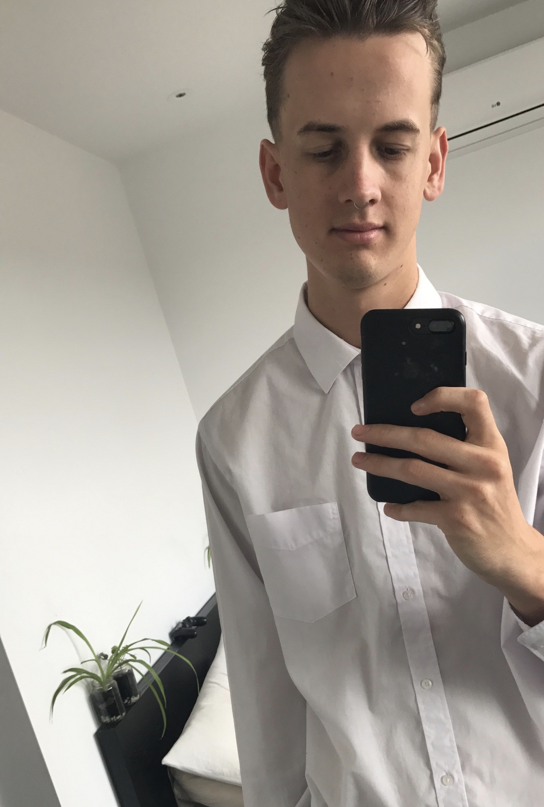

<!DOCTYPE html>
<html>
<head>
	<style> body {
  background-color: lightblue;
}

h2 {
  color: white;
  text-align: center;
}

p {
  font-family: verdana;
  font-size: 20px;
}
<title>Jack Sharples - ePortfolio</title>
</head>
<body>
	<h2>About me</h2>
	<p>Student Number: 3871455 <br> Email: s3871455@student.rmit.edu.au <br>Country of birth: Australia <br>Completed high school 2012 <br>Started BA Commerce 2013 - Incomplete <br>Started BA Biomedical Science 2015 - Incomplete <br>Languages spoken; English, currently learning German.<br> Favourite pet: I only have one pet name Jesse, they are my favourite and give me some fantastic cuddles in the morning. <br>Fun fact: back in my high school years I used to teach 5-12year olds how to surf over the summer through a program called Surf Groms.</p>
	

<h2> Interests in IT</h2>
<p>My interest in IT began at a young age with our first computer using PC DOS 2000. It was mostly just fascination and gaming back then. As the years have progressed IT has always been there in most aspects of life, be it education, socialising with friends, or personal interests.<br>The particular moment that made me decided to get more involved in the IT world and seek it as a career is all recent revelations with COVID-19 happening and seeing the opportunity to up skill and secure my place in a job in the future.<br>I chose RMIT mostly because its what was offered by Open University Australia, but also my housemate attended there and had nothing but praise. Also Technology is in the name so how could I go wrong.<br>I am not entirely sure what I want out of my studies just yet, I am hoping to learn and discover that as I progress through the course. At the end of my studies I hope to be job ready and armed with knowledge and techniques that give me an edge in the industry.</p>

<h2>Ideal Job</h2>
<p>Senior Software Developer</p>
<a href="https://www.seek.com.au/job/50439210?type=standard#searchRequestToken=98a15881-60fc-4970-87e1-a03ac1c71caa>"></a>

<p>I am not really sure what I want careerwise exactly, but I am currentky enoying my Introduction to Programming so I have investigated a software development career.<br> In this role I would be incharge of design, development and implementation of various programs. A particular aspect of this job that i find interesting is the ability to work from home as the freedom that can come with that can be powerful.<br> Areas that you would need to be proficient in would be various software languages, for this job in particular; NET, C#, Node.JS, WPF, Entity Framework.<br> Another core skill that would bve required would be the ability to lead and work in. teams, espcially when it comes to working remote as you will need to be able to liase and organise the teams/clients you are leading to get tasks complete at a high level of proficency.<br> I currently have some expertise in leadership and working in teams from my career in hospitality but how that will translate into a new industry could prove to be a challange as you are working with lots different people in lots of different locations. I plan to aquire most of these skill through this degreee but also to continue after study through self-learning on various languages as there are so many of them in thihs dynamic industry.</p>


<h2 >Personal Profile</h2>
<h5>Myer-Briggs Test</h5>
<p>The Debater ENTP A Debater (ENTP) is a person with the Extraverted, Intuitive, Thinking, and Prospecting personality traits. They tend to be bold and creative, deconstructing and rebuilding ideas with great mental agility. They pursue their goals vigorously despite any resistance they might encounter. This means I am able to thhink quickly on my feet and comw up with origan al ideas which could be hugely benefical when it comes to writing computer software. Although on the downside i can be argumentative and insensitive to others which isnt great nesescarily in a team environment.</p>
<a href="https:www.16personalities.com"></a>
<h5>Learning style Test</h5>
<p> Pragmatist style learner Being a pragmatist style learner means that I like to see how things are applied to real life scenarios so theorising can seem a bit pointless without an action. I I like to act quickly and confidently on ideas, getting traight to the point, and may lose patience with lengthy discussions.</p>
 
	<a href="http://www.emtrain.eu/learning-styles/"> Take the test</a>
<h5>Big 5 Factors</h5>
<p>After taking the big 5 factors test I am able to see that I am outgoing and open which is useful when working with teams with my high score in Factor I and that need to work on round out my ideas and put more thought into ideas before rushing into them, as seen with the low Factor IV score.</p>

	<a href="https://openpsychometrics.org/tests/IPIP-BFFM/"> Take the test</a>
	<br>
<h2 >IT Project Idea</h2>
<h4>FoodWaste</h4>
<p>My project idea is to build an app that connects restaurants/everyday people in a way that allows them to reduce their food waste footprint. Through the redistribution of food that would otherwise be thrown out, it would allow restaurants to pass on unused food whether it be edible or for composting grade to people that can use it by putting it up for on the app and then people would come collect it. It was be based on location sharing and connecting with with other users in the local area.<br>“Each year we waste around 7.3 million tonnes of food; this wastage equals about 300kg per person.”[1] It is a waste of resources and is something that can be easily solved by changing how food supply chains work. The app will enable people to make an active effort in reducing there footprint hat they leave on our planet of finite resources. With global warming being such a hot issue at the moment (pun intended). An app that helps people connect with reducing their food waste impact would be great step forward in helping us achieve a more sustainable relationship with the planet.<br>The app would have two types of users; Donators (people trying to offload food waste) and receivers (people taking that offload). The donators would list the product and then people in the area would be able to come pick it up and take it off their hands. For example if a restaurant was left with chicken carcass’ that would normally be wasted someone can collect them and then repurpose it (pet food or making a broth). Food items would have to ranked by quality to express whether it is still food grade or whether it needs to be composted. People could also put food up that is in their fridge that they are not going to use. It is like the concept on dumpster diving, except that instead of going around looking through dumpsters you just browse what’s in your local area from the app.<br>
The platform would be both web-based and mobile app ready as people would be using it on the go. It would need a UX designer to create both a user friendly and functional app so that it can be easily adopted by anyone that would like to try reducing their food waste footprint. It is essential to keep it user orientated so that it can become part of everyday routine, it can’t seem like a chore. It would also be important to include a solid data management system so that you are able to collect data on how much food and being saved from going too waste and so that people are able to track how they are progressing in reducing their foot print.<br>To explore this idea I would need to become proficient in a suitable programming language perhaps JavaScript as they are user friendly and front-end web development based but also flexible in its ability to develop mobile applications and back-end development. [2] <br>Hopefully through the development of this app people will be able to becoming active in helping reduce the food wastage problem in Australia. It will really give the power to communities to make a positive change in shaping how we operate in society and the effects of food supply chains.</p>

<h3 >References</h3>
<p>[1] Department of Agriculture, Water and the Environment. 2020. Department Of Agriculture, Water And The Environment. [online] Available at: <a href=https://www.environment.gov.au/protection/waste-resource-recovery/food-waste>https://www.environment.gov.au/protection/waste-resource-recovery/food-waste<a/> [Accessed 16 September 2020].</p>
<p>[2]Fullstack Academy. 2020. The 9 Best Programming Languages To Learn In 2020. [online] Available at: <a href=https://www.fullstackacademy.com/blog/nine-best-programming-languages-to-learn>https://www.fullstackacademy.com/blog/nine-best-programming-languages-to-lear<a/> [Accessed 16 September 2020].</p>


</body>
